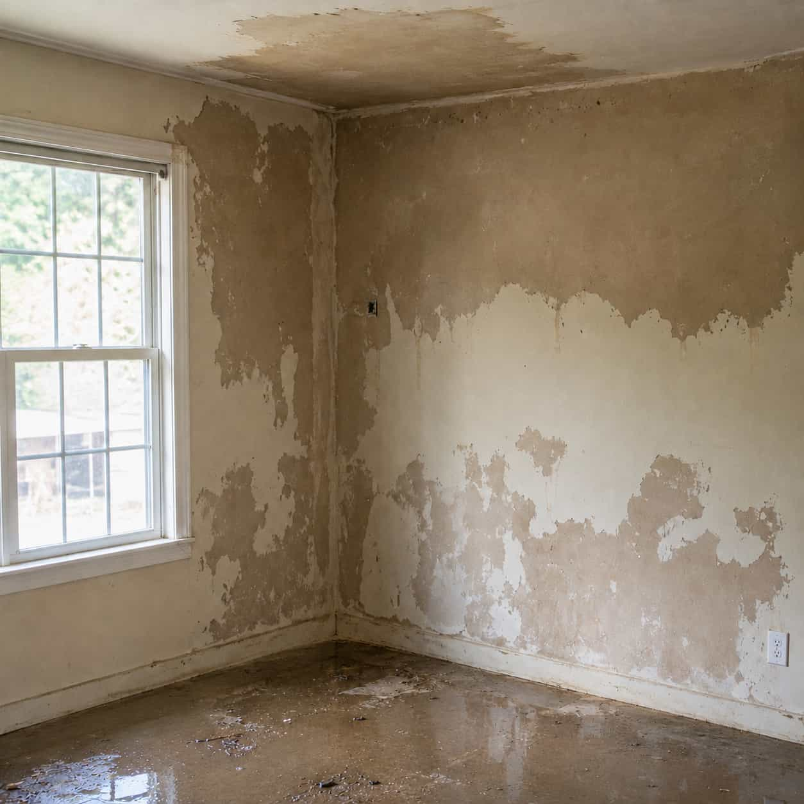
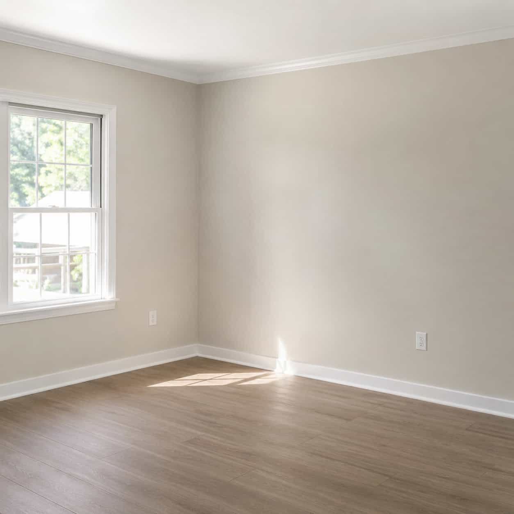

Weather-related water concerns can affect multiple areas at once, so your request should explain where water entered and what areas are involved.

Request explanation
Describe the storm-related water path before comparing options.
Storm and flood damage requests may involve heavy rain entry, exterior water intrusion, roof-adjacent water concerns, basement accumulation, damp walls, or water spreading across floors. DryHouse Match helps homeowners submit details and compare available provider options.
- Heavy rain water intrusion
- Exterior or roof-adjacent entry
- Flooding or water accumulation
- Affected rooms and entry points
Category fit guide
Is active leak the right request path?
Use this path when water appears to be entering, dripping, spreading, or showing up near ceilings, walls, fixtures, pipes, appliances, or roof-adjacent areas.
Compare all categories
Use this path when
-
01
Water is currently dripping, entering, or spreading inside the home.
-
02
Ceiling, wall, flooring, or surface marks appear to be growing.
-
03
Water appears near a pipe, fixture, appliance, or roof-adjacent area.
Choose another path when
-
01
Water is already standing across the floor — review Standing Water Cleanup.
-
02
The concern is mainly basement seepage — review Flooded Basement.
-
03
The issue is only odor, stains, or humidity — review Moisture & Mold Concerns.
Provider comparison factors
What to compare for storm and flood requests.
When reviewing provider options, homeowners may want to ask about availability after weather events, affected area review, documentation, pricing, scheduling, licensing, insurance, warranties, and final service terms.

Request details
Explain the weather-related entry point.
Include where water appears to have entered, which areas are affected, whether water is standing or spreading, and what changed after the storm or flooding event.

Provider discussion
Ask about coverage and scope.
Discuss service area, timing, what the provider may review, documentation, pricing method, scheduling, warranties, and final terms before deciding.
Common situations
Storm and flood details homeowners often describe.
Heavy rain water entry
Water appearing after heavy rain can be described by entry point, affected room, visible spread, and nearby surfaces.
Submit details
Share the storm or flood category, affected area, contact details, and short notes.
Matched options
Participating provider options may be identified based on category and location.
Provider contact
Available providers may contact you to discuss timing, scope, pricing, and next steps.
Homeowner chooses
You decide whether to continue after reviewing provider information and terms.
Storm and flood FAQ
Before submitting a storm or flood request.
No. DryHouse Match is an independent provider-matching platform. It does not perform
storm cleanup, flood cleanup, drying, restoration, inspection, roofing, plumbing, or
contractor work directly.
Helpful details may include where water entered, whether heavy rain or flooding was
involved, which rooms or exterior-adjacent areas are affected, and whether ceilings,
walls, floors, basement areas, or belongings are involved.
No. Provider availability may vary by location, storm conditions, urgency, provider
coverage, timing, and project scope.
No. Submitting a request does not create a service agreement. Any agreement is made
directly between the homeowner and the provider they choose.
Aggregator clarification:
DryHouse Match helps homeowners submit storm and flood request details and compare available local
provider options. It does not perform water-damage or weather-related cleanup services directly.